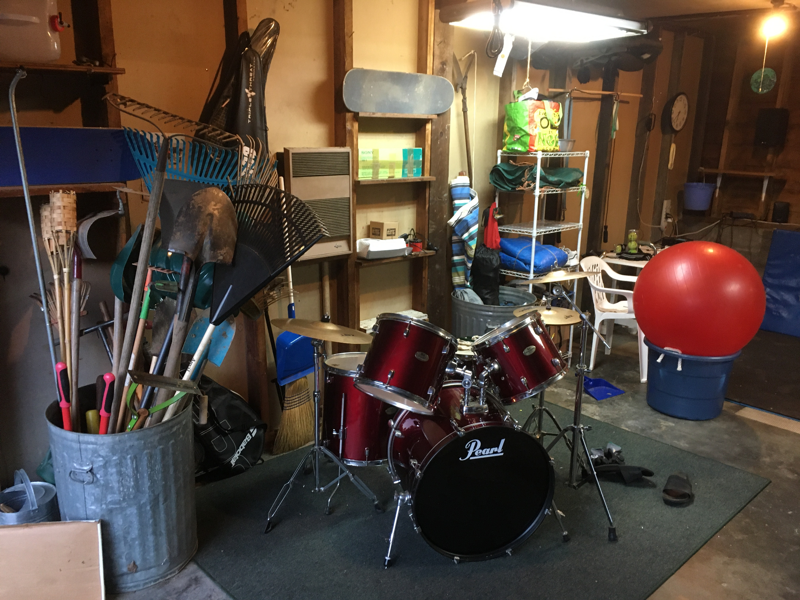
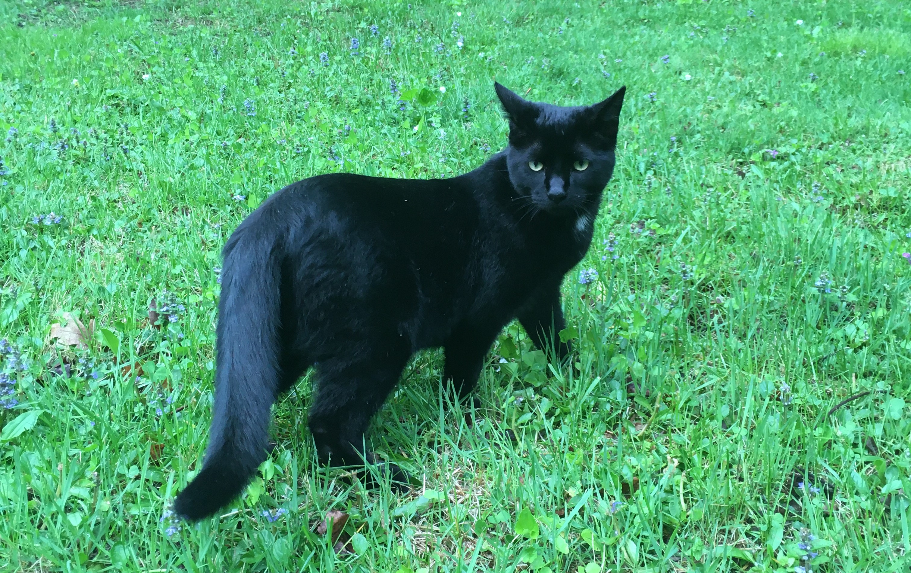

I'm back where I started since last month's post. felt like the antidepressants stopped working and were possibly exacerbating my stomach issues, so I stopped taking them (with the support of my prescriber -- i'm not entirely self-medicating here). Stomach has been feeling better. I have good days and bad days in terms of depression. On the whole glad to be off them, back to bassline (or baseline as the case may be).
speaking of music: I moved my drumset! For the longest time it was across the street in this old building we call the Lodge. In theory I could go and play it any time but I never did. Now it's in the garage, 10 times closer to the house, and I'm playing it way more. I'm in the garage all the time anyway to solder (or sit around vaguely intending to solder) so the barrier to drumming is much lower. And I love drumming! I'm a drummer, bro. I forgot for a while.

Also on the subject of music, I've recently been obsessively reading about headphones. Remember when I said the DT770s are weak and the HD599s are better? Turns out I was just not powering the 770s properly. I plugged them into my dad's headphone amp today and suddenly there was the bass I'd been missing for 2 years. More powerful bass than the 599s after all! I've been thinking about what next audio equipment to shop for and I'm thinking now I should just get a nice headphone amp. I want to try a lot of different headphones but I need an amp first to make sure I'm driving them all properly. Huh... kinda like I want to try different jobs and live in different cities but I need my fucking body to be working properly first.
Song rec: Tenacious D's The Who Medley. My friends and I used to love Tenacious D in high school but I hadn't listened in a while. They fucking rock!
8/25/22 - feelin good lately!
I think my antidepressants are maybe working finally. They just upped my dose, too... and I feel like I've been on a roll pretty much since the new dose (300mg Wellbutrin) started.
Other factors contributing to my good feeling rn:
I have a new therapist. I wasn't getting along with the first one they gave me after a few sessions so I requested a switch. Good move! The new one, Jen, has been so much better. I feel much more comfortable and I feel I'm getting better quality help. Last therapist was assigning me a bunch of exercises and acting disappointed when I wasn't doing them; new therapist understands how hard it is for me to do anything and works with me to choose managable goals. Thank you, thank you, thank you.
I bought Celeste finally, the platforming game. It's so good that I've actually cut back on melee this week. Story has a theme of working with the darker parts of yourself, rather than trying to get rid of them. I feel this is wisdom I'm going to need.
I just rewatched Russian Doll, the Natasha Lyonne series. It's so good. Hits me really deeply for some reason. I cried so much watching the last episode. Watch Russian Doll!
I've been not sleeping much for a few days. This happens sometimes. I think I kicked it off by playing a bunch of melee til 4am earlier in the week, but now I'm on a streak of like 3 days staying up super late and sleeping a bit in the morning. I like being up late because I like having alone time, which can be hard to get while living with my family. I wonder if 5-6 hrs a night, sleeping into the morning, is all I really need. Or maybe it's just the new antidepressants.
Here's hoping this continues, or gets even better.
Song rec: none from me, but pick out your own song and bump it
8/14/22 - maine trip recap
I added a volume slider to the meditation timer. Any civilized website should have a volume slider.
Also removed the feature where the sidebar would stick when you scrolled down the page. Was neat but was actually getting a little annoying, especially on small browser windows, if you want to get down to the "links" box, e.g.
I dropped the microdosing scheme after the fourth repetition. I was on a trip, a road trip to Maine, when I was scheduled for day 5, and didn't want to mix my drugs with my driving. After that I just never picked it up again. It wasn't really doing much for me. Also I was feeling lowkey fine without it, which was nice. I wondered if my antidepressants had finally kicked in.
That was a fun Maine trip! I visited some friends and my thesis advisor from college. It was all quite nice. Even though I hadn't seen my advisor in 4(?) years, it felt very familiar hanging out with him. His kids had grown up by about 4 years since I saw them last and they were much larger and more talkative. They were great! They were showing me their Legos and stuff. My advisor was kind of doing the same, showing me his drone and his grandfather clock and telling me how things had been on campus.
I had a lot of fun driving around by myself. I was bumping music, especially Disclosure, or sometimes listening to an audiobook called Unmasking Autism. I suspect I might be autistic. I could relate to a lot of it. I also relate to a lot of ADHD traits, as I've mentioned before. I wouldn't be surprised if I have both.
Changed the "meditation timer finished" bell to be quieter and less harsh on the high end.
Microdosing scheme is going pretty well so far. I've stuck with it for three repetitions. I'm lowkey using the 3-day cycle to define my own miniature weeks. It goes Monday, Thursday, Saturday, and I do the microdose on Saturday. Regular week is too long for me anyway. Also with this 1/3 of my days are weekend (33%), compared to 2/7 (29%) of the standard week. Anything is possible when you set your own hours at work, and don't work very much in the first place. I work from home now too; more on that at some point.
I saw a new endocrinologist last week (7 day week, I mean). She's way better than my old one. Old one had been giving me the same hormone dose for two years, with me still complaining of the same hypothyroid symptoms, because my bloodwork numbers were nominally OK. New one immediately increased my dose, repeatedly saying that what's important is whether I feel well, not what my numbers are. She also ordered a bunch of tests to see if there's any other issue that could be causing my symptoms. Night and day difference honestly. I hope either the new dose or the tests lead somewhere. I don't want to live at home forever.
uhh uhhh i got new headphones today! fuckin Sennheiser HD 599s. My brother had a pair for years and I had the Beyerdynamic DT 770s which I thought were pretty equivalent but I compared them a few weeks ago and the Sennies are just clearly better. Better bass, better treble, better soundstage (I think that's the term? where it sounds like the instruments are coming from different places in space). I found some open box ones on eBay and bid the minimum bid, $77, and won the auction with no competing bids a few days later, and they arrived today. And they're great! Music is even better now! I'm so happy with this purchase. If you're in the market for new headphones I highly highly recommend these things.
what else what else
health update / drugs update:
i have hashimoto's disease, which is an autoimmune disease that targets your thyroid. My thyroid is fucked. I've been taking thyroid hormone replacement pills for a couple years but they never seemed to help too dramatically. I'm tired all the time and I have stomach issues. It makes me depressed, being tired all the time and feeling shitty. So, a few weeks ago my sketchy online psychiatrist suggested I try Wellbutrin, which is some kind of non-SSRI antidepressant. I've been taking those pills for a couple weeks and haven't noticed any change but apparently it can take over a month for it to start working so we'll see.
Impatient with Wellbutrin and wanting to do more drugs in general, today also I'm starting a new scheme of regularly microdosing LSD. I took my first dose today, a 12th of a tab or ~8 micrograms. Felt a little hyped up, almost like on adderall, a few hours after I took it, then felt a litttle trippy for several hours after that which was nice. The plan is to do this every 3 days. I figure I'll do it at least until I've gone through the whole tab, which will take over a month. I like this scheme if for no other reason than it lets you stretch a small amount of acid for a super long time. Maybe going slowly will let me get more benefit out of the tab than going all at once? Idk, but I'm trying it out.
I went way too long between journal entries... so much has happened that I'm not gonna write up, bc I like to keep these things kinda short. In short: I went to Bonnaroo and it was awesome. I got my first speeding ticket by flipping off a cop. I set up my own little music studio space in my garage and I've been having a lot of fun with it. My brother is home from college. Umm and they got me on antidepressants now.
Of the above topics, I feel like I want to talk about getting pulled over the most right now. But not right now; I'm going to bed. Fuck it, I'll publish this as is and make a new entry tomorrow. More frequent posts! Why not!
welcome dear readers to my website's new location on github.io. What was wrong with the old location? I wanted my meditation timer in the sidebar to play a sound when time is up, but neocities.org doesn't let you host mp3s with a free account. github.io does, so here we are, with sound!
The meditation box is working now. You can put in any number of minutes, including decimal minutes (try 0.1 minutes, e.g.). I'm hoping to use this feature myself as I try to form a meditation habit. I intentionally didn't include a countdown / seconds remaining display bc I think that puts too much emphasis on how much time you have left to wait, rather than how much time you've already spent. Also a loading bar with no numbers is hopefully less distracting, not that one should be staring at the clock the whole time in any case. I recorded the "timer finished" jingle myself, too!
Update on my life: not much to report I think? I have an adderall precription now and that's been sort of helping. Today I was off it (they recommend taking a couple days off a week) and I felt so scattered at some points, but still managed to get some things done. Hopefully this is just how I always was and not a newfound drug dependency.
I'm going to Bonnaroo soon, huge music festival in Tennessee that I've been to twice before. Last year it was canceled by an act of god (hurricane made the fields too muddy) and the year before it was canceled for COVID, so I think this is gonna be a crazy year as everyone finally gets to show up. (Fingers crossed we do get to show up this time.)
I did acid again since the last post. This time the thing I came away with was an image of myself as this formless intelligent slime. Of course I struggle to stay organized; I'm a slime! This was strangely comforting. Was also filled with appreciation for plants. Identified with the wisteria, a viney kind of plant that has no strong structure of its own but wraps around other trees and fences and stuff to get higher and catch some sunlight. All of this is part of me processing the idea of having ADHD. A thorny plant poked me as I was walking and I got mad at it, but then I looked and there was some wisteria twirled around it, and I couldn't stay mad.
Oh, and the reason I've been outside so much is that Momo goes outside now! He loves it out there. At first I would take him out in a harness, but now I feel safe letting him roam on his own. He has a territory around the yard and stays clear of the road. Yesterday he had a staredown with a wild turkey, which must have looked like a dinosaur to him (he won the staredown). Afterwards he was all puffed up, fat tail, bristled back, looked very fierce, but he calmed down and shrunk when I pet him. Nice cat.

4/1/22 - publishing my website
spent a lot of time making the "listen to this!" box and I like the songs I put on there so I'm gonna publish this thing. I was thinking I wanted to have at least one more journal entry up before I did that but whatever, I'll journal more later.
Just to have some update though: I'm back home in NY after a snowboarding trip to Colorado and New Mexico. Had a great time! Saw a bunch of friends, which is good bc I don't really see any friends at home. My snowboarding skills didn't evaporate in the year since I shredded last.
Also did a small amt of LSD (like 0.4 of a tab) and that was fun. More than anything it made me excited to do more soon. When I'm on acid I feel that I'm seeing truths about the world that are so obvious and self-evident but now I forget what they were. I took some notes though. One theme was that, although I feel a little trapped at home, and restricted by my low energy levels and stomach issues, I shouldn't resent the situation; I am restrained for my own safety. When I am healthy enough to get out again, I will. So: work on getting healthier. (I was in the backseat of a car, playing with my seatbelt while reflecting on safety measures / constraints, and figured all the things slowing me down are like the seatbelt in some way I don't yet understand. Hope to understand it better upon doing more acid / eventually getting back out in the world.)
Also wanted to share this thought: when your skin dries out, that's because it's putting out moisture into the air and not getting enough back. The fact that your skin can dry out shows that it's a permeable membrane, always exchanging material with the environment. When it doesn't dry out it's still doing that, it's just that the exchange is more equitable. File under: "no man is an island," a common theme of my acid trips.
But anyway, my main reason for publishing now is to share my song thing! I put like 50 tracks on there. It randomly selects one when you load the page, and then you can hit the button to draw another one. Hope you find something you like! And tell me if you do 🙂
- N
2/4/22 - pushin <p>
shitty css stylesheet isn't working so I'm hardcoding my styles into the html file. embrace tradition.
does this insert a line break? yes. good.
i used to know html and css better. I've learned it at least twice before, but my mind isn't built for memorization.
I'm going to NYC tomorrow.
Yesterday I got the news that I'm not getting the job I applied for in Boston. I flubbed the interview, I'll admit it.
There was one question where I just blanked and didn't even venture an answer. Not a hard question either... when they said what they were looking for, I was like "oh, yeah that's what I would have said."
But maybe it wasn't just my interview performance. Seemed like they wanted someone with experience dealing with angry customers, something I neither have nor want.
I'm not going to NYC for a job search though, just to see a friend. Losing out on this job shifted my focus back to my upcoming plans to see my friends. That's what I really care about, that's what really enriches my life.
And honestly I might not have been ready for a full time job. My energy levels are in the garbage, I'm so tired most of the time. I want to work on my physical health, get a better routine going or something.
I'm on ritalin now too which helps here and there but there's always the crash afterward. I want to try Adderall, see if that suits me any better. I suspect no drug is going to be a cure-all.
I've tried a bunch (weed, LSD, shrooms, molly, coke, ketamine, uhhh whippets) and it's all temporary at best. But hey, everything's temporary.